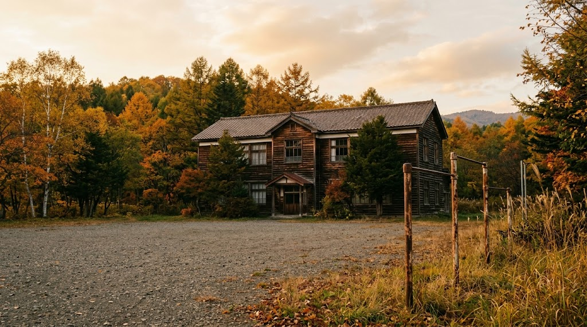
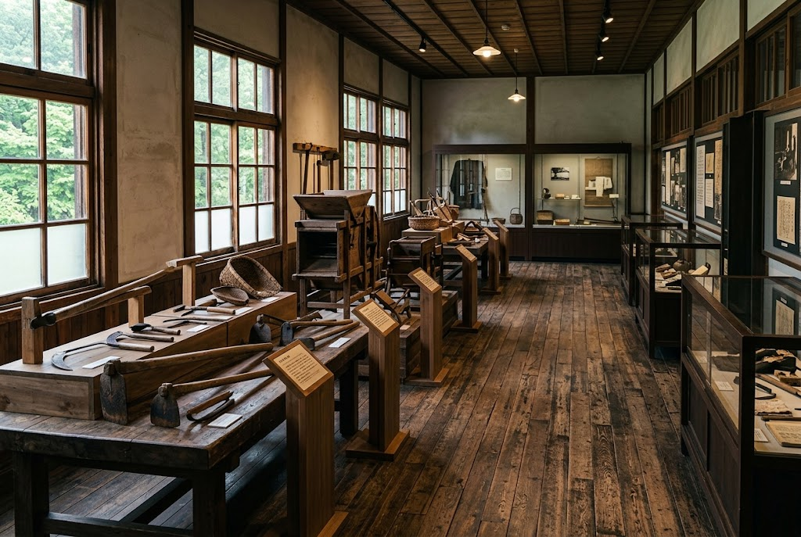

★★★★★
かつて札幌にあった三和精機製作所が製造した35mm映写機が展示されています。美深東映で使われていた映写機。日本ではここでしか見れない映写機だと思います。とても貴重です。
2014年8月訪問
廃校になった小学校の校舎に、
開拓の暮らしと、先人の知恵がしずかに息づいています。
平成11年3月31日に廃校となった町立厚生小学校。その校舎を活用し、平成14年（2002年）10月1日に伝承遊学館は開館しました。
地域の先人たちの歴史や文化、産業、自然科学に関わる資料を集め、展示し、後の世代へ伝えることが設立の目的です。美深町の歴史や北海道開拓時代の産業道具（特に林業関連）、地域の自然環境、遺跡資料まで、幅広い収蔵品を見学できます。
実物の道具や生活用品を目の前にすることで、当時の暮らしを具体的に思い描けるのがこの館の魅力。教育施設としての役割も担っています。

実物だからこそ伝わる、開拓の息づかい。

廃校を利用した博物館分館に、開拓の暮らしを支えた農業用具が900点並びます。ひとつひとつの道具から、土地を拓いた人びとの工夫と粘り強さが伝わります。
かつて札幌にあった三和精機製作所が製造した35mm映写機を展示。美深東映で使われていたもので、来館者からは「日本ではここでしか見られないのでは」という声も寄せられています。
実際に訪れた方のクチコミです。
かつて札幌にあった三和精機製作所が製造した35mm映写機が展示されています。美深東映で使われていた映写機。日本ではここでしか見れない映写機だと思います。とても貴重です。
2014年8月訪問お仕事で立ち寄ったのですが、色々なハーブがありましたね。また時間を作ってゆっくりと行こうと思いました。
来館者のクチコミお出かけ前に、休館日をご確認ください。
| 5月 | 11日・25日 |
|---|---|
| 6月 | 8日・22日 |
| 7月 | 6日・20日 |
| 8月 | 5日〜11日（連続7日間） |
| 9月 | 7日・21日 |
| 10月 | 5日 |
最新の開館状況は、公式サイトまたはお電話でご確認ください。